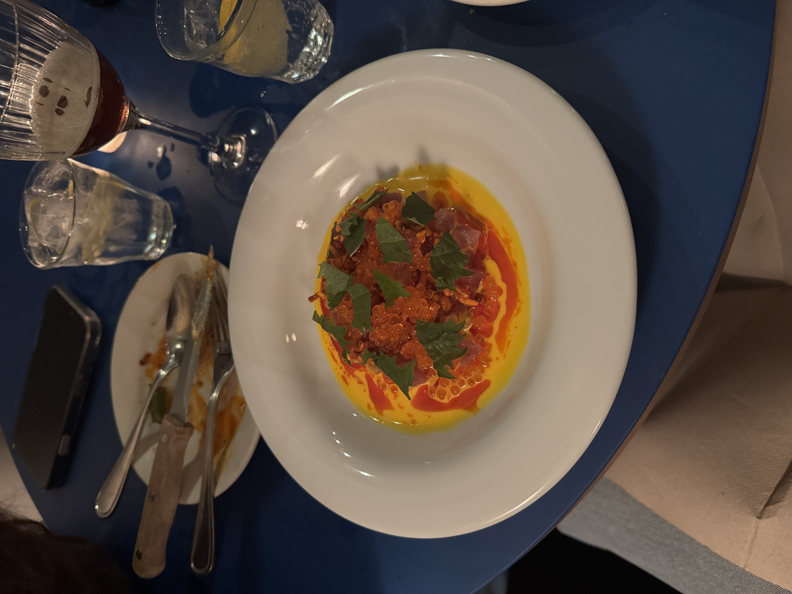
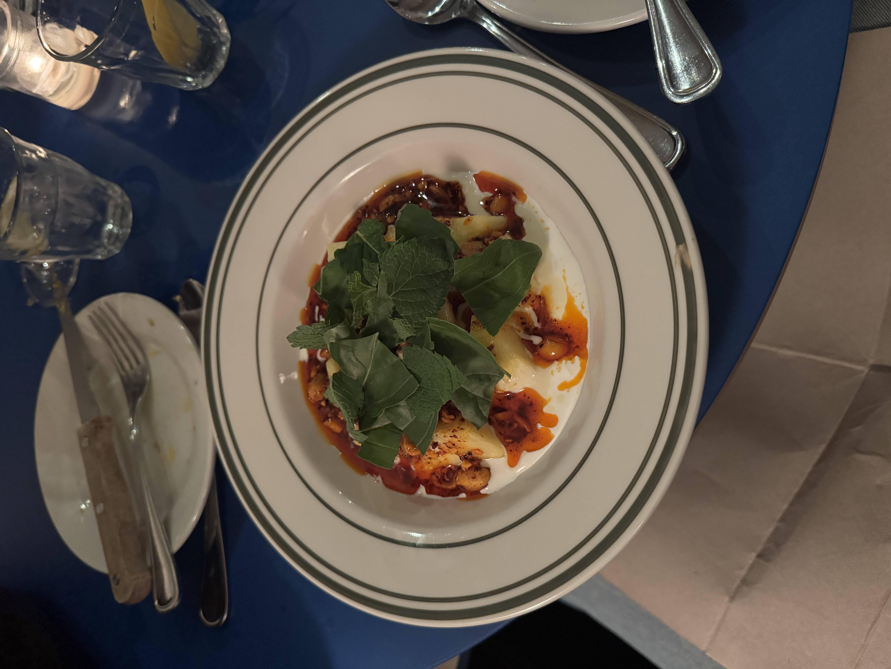
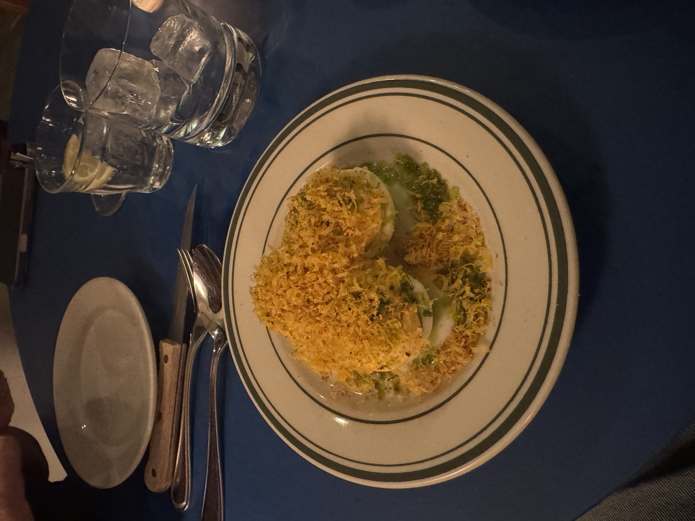

The food at Bertie was a pleasant surprise. I expected it to be good, but not delicious. The restaurant has a strict no-reservation policy, which led to a short wait outside of about five minutes. As soon as my mom and I walked in we were led by a very friendly waiter from New Zealand to a quaint table that stood right infront of the window that revealed the restaurant to potentially hungry pedestrians.

The visuals were 10/10, all of the food that was served to us that night had looks that could match the taste. The presentation alone deserves some applause. The portions are balanced, and the menu is tailored for sharing. We ordered a couple of appetizers and two mains, and then of course a delicious dessert.

The biggest highlight for me was the carrot cake dessert that came at the end, but the actual hearty food which we came for was excellent. Their deviled eggs are truly something out of this world, and the fresh raw salmon with the caviar was also a nice touch.

Then of course there was my second favorite dish of the night, their signature Buffalo Wings. Those wings are to die for. As you can see we made sure to also get some cocktails.
All in all, the service was friendly, and despite a no-reservation policy we still got a nice seat. The dessert was terrific, and the atmosphere made you feel like you were in a good restaurant, as the room was bustling with conversations. For those that do not like a loud atmosphere I would recommend you come at a less busy time. The wings and deviled eggs are a must-have. I was not so impressed with the straciatella, while the cheese itself was good I thought the pairing with pineapple did not work so well. If it weren't for the straciatella disappointment Bertie would've definitely earned a 5 star food rating in my books, but alas I can't give everyone a 5 star rating! Click here for their instagram.